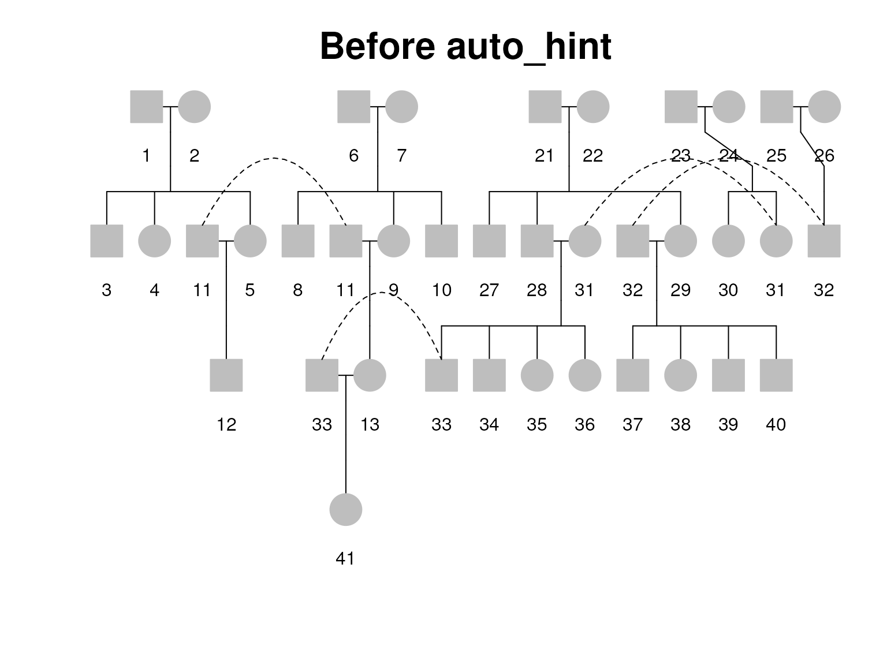
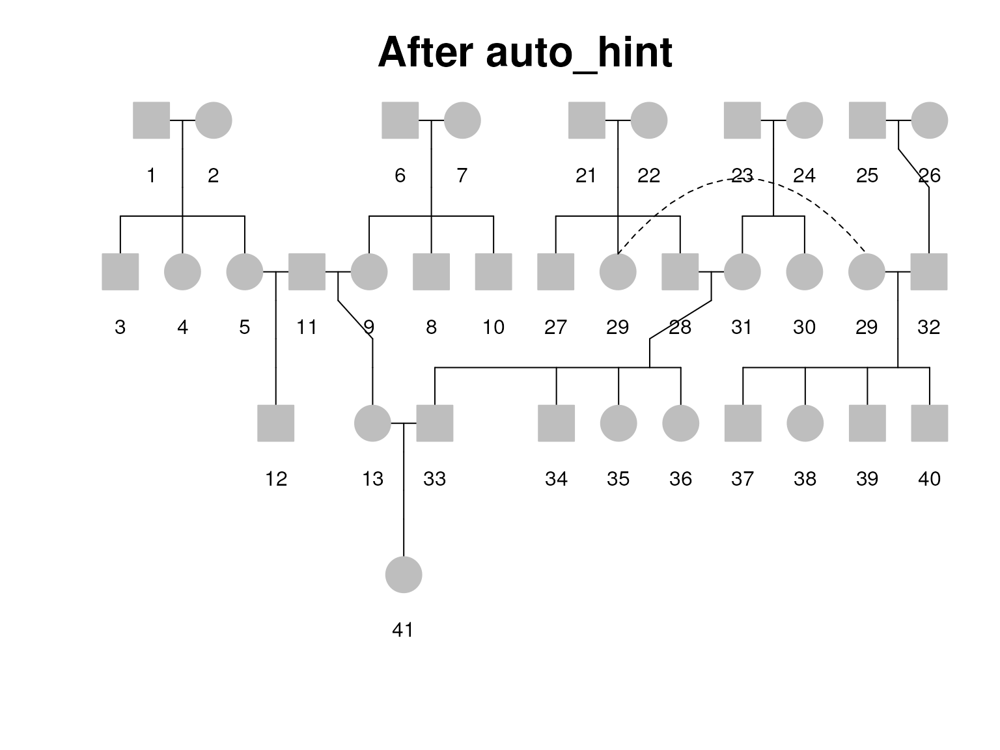
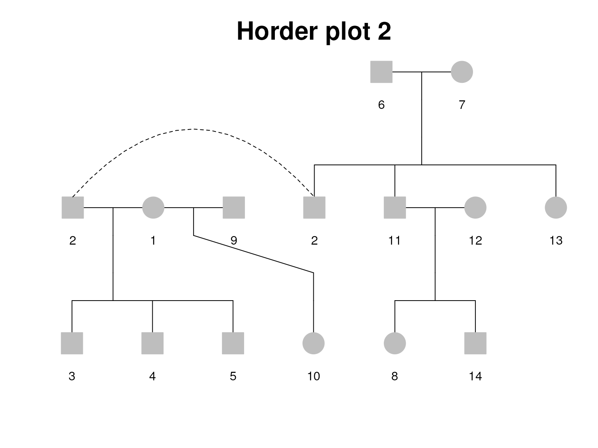

Pedigree alignment details
TM Therneau
25 February, 2025
Source:vignettes/pedigree_alignment.Rmd
pedigree_alignment.RmdPedigree alignment
An aligned Pedigree is an object that contains a Pedigree along with a set of information that allows for pretty plotting. This information consists of two parts: a set of vertical and horizontal plotting coordinates along with the identifier of the subject to be plotted at each position, and a list of connections to be made between parent/child, spouse/spouse, and twin/twin.
Creating this aligment turned out to be one of the more difficult parts of the project, and is the area where significant further work could be done.
All the routines in this section completely ignore the \(id\) component of a Pedigree; everyone is indexed solely by their row number in the object.
Hints
The first part of the work has to do with a hints list for each Pedigree. It consists of 3 parts:
- The left to right order in which founders should be processed.
- The order in which siblings should be listed within a family.
- For selected spouse pairs, who is on the left/right, and which of the two should be the anchor, i.e., determine where the marriage is plotted.
The default starting values for all of these are simple: founders are processed in the order in which they appear in the data set, children appear in the order they are found in the data set, husbands are to the left of their wives, and a marriage is plotted at the leftmost spouse. A simple example where we want to bend these rules is when two families marry, and the Pedigrees for both extend above the wedded pair. In the joint Pedigree the pair should appear as the right-most child in the left hand family, and as the left-most child in the right hand family. With respect to founders, assume that a family has three lineages with a marriage between 1 and 2, and another between 2 and 3. In the joint Pedigree the sets should be 1, 2, 3 from left to right.
The hints consist of a list with two components.
- A vector of numbers of the same length as the Pedigree, used to order the female founders and to order siblings within family. For subjects not part of either of these the value can be arbitrary.
- A 3 column matrix of spouse pairs, each row indicates the left-hand member of the pair, the right-hand member, and which of the two is the anchor, i.e., directly connected to their parent. Double and triple marriages can start to get interesting.
Auto_hint
This routine is used to create an initial hints list. It is a part of the general intention to make the routine do pretty good drawings automatically. The basic algorithm is trial and error.
- Start with the simplest possible hints (user input is accepted)
- Call align to see how this works out
- Fix any spouses that are not next to each other but could be.
- Any fix on the top level mixes up everything below, so we do the fixes one level at a time.
The routine makes no attempt to reorder founders. It just is not smart enough to figure that out.
The first thing to be done is to check on twins. They increase the
complexity, since twins need to move together. The
rel(ped, "code") object is a factor, so first turn that
into numeric. We create 3 vectors:
- \(twinrel\) is a matrix containing pairs of twins and their relation, it is a subset of the incoming \(rel\) dataframe.
- \(twinset\) vector identifies twins, it is 0 for anyone who is not a part of a multiple-birth set, and a unique id for each member of a set. We use the minimum row number of the members of the set as the id.
- \(twinord\) is a starting order vector for the set; it mostly makes sure that there are no ties (who knows what a user may have used for starting values.)
A recent addition is to carry forward packaged and align to kindepth and align.
Shift in auto_hint
Next is an internal function that rearranges someone to be the leftmost or rightmost of his/her siblings. The only real complication is twins. If one of them moves the other has to move too. And we need to keep the monozygotics together within a band of triplets.
Algorithm : if the person to be moved is part of a twinset, first move all the twins to the left end (or right as the case may be), then move all the monozygotes to the left, then move the subject himself to the left.
Init auto_hint
Now, get an ordering of the Pedigree to use as the starting point.
The numbers start at 1 on each level. We do not need the final
prettify step, hence align = FALSE. If there is a
hints structure entered, we retain its non-zero entries, otherwise
people are put into the order of the data set.
We allow the hints input to be only an order vector. twins are then further reordered.
Fixup auto_hint
The result coming back from align() is a set of vectors
and matrices:
- \(n\) vector, number of entries per level
- \(nid\) matrix, one row per level, numeric id of the subject plotted here
- \(spouse\) integer matrix, one row per level, subject directly to my right is my spouse (1), a double marriage (2), or neither (0).
- \(fam\) matrix, link upward to my parents, or 0 if no link.
Now, walk down through the levels one by one. A candidate subject is one who appears twice on the level, once under his/her parents and once somewhere else as a spouse. Move this person and spouse the the ends of their sibships and add a marriage hint. The figure above shows a simple case. The input data set has the subjects ordered from 1–11, the left panel is the result without hints which processes subjects in the order encountered. The return values from align have subject 9 shown twice. The first is when he is recognized as the spouse of subject 4, the second as the child of 6–7.
The basic logic is
- Find a subject listed multiple times on a line (assume it is a male). This means that he has multiple connections, usually one to his parents and the other to a spouse tied to her parents. (If the spouse were a marry-in she would have been placed alongside and there would be no duplication.)
- Say subject x is listed at locations 2, 8, and 12. We look at one
pairing at a time, either 2-8 or 8-12. Consider the first one.
- If position 2 is associated with siblings, rearrange them to put subject 2 on the right. If it is associated with a spouse at this location, put that spouse on the right of her siblings.
- Repeat the work for position 8, but moving targets to the left.
- At either position, if it is associated with a spouse then add a marriage. If both ends of the marriage are anchored, i.e., connected to a family, then either end may be listed as the anchor in the output; follow the suggestion of the duporder routine. If only one is, it is usually better to anchor it there, so that the marriage is processed by align when that family is. (At least I think so.)
This logic works 9 times out of 10, at least for human pedigrees.
We’ll look at more complex cases below when looking at the \(duporder\) (order the duplicates) function,
which returns a matrix with columns 1 and 2 being a pair of duplicates,
and 3 a direction. Note that in the following code \(idlist\) refers to the row numbers of each
subject in the Pedigree, not to their label
ped(ped, "id").
duporder
For the case shown in figure above the duporder function will return a single row array
with values (2, 6, 1), the first two being the positions of
the duplicated subject. The anchor will be 2 since that is the copy
connected to parents The direction is TRUE, since the spouse is to the
left of the anchor point. The id is 9, sibs are 8, 9, 10, and the shift
function will create position hints of 2,1,3, which will cause them to
be listed in the order 9, 8, 10.
The value of spouse is 3 (third position in the row), subjects 3, 4,
and 5 are reordered, and finally the line (4,9,1) is added
to the sptemp matrix. In this particular case the final element could be
a 1 or a 2, since both are connected to their parents.

The figure above shows a more complex case with several arcs. In the
upper left is a double marry-in. The \(anchor\) variable in the above code will be
(2,2) since both copies have an anchored spouse. The left
and right sets of sibs are reordered (even though the left one does not
need it), and two lines are added to the sptemp matrix:
(5,11,1) and (11,9,2).
On the upper right is a pair of overlapping arcs. In the final tree we want to put sibling 28 to the right of 29 since that will allow one node to join, but if we process the subjects in lexical order the code will first shift 28 to the right and then later shift over 29. The duporder function tries to order the duplicates into a matrix so that the closest ones are processed last. The definition of close is based first on whether the families touch, and second on the actual distance. The third column of the matrix hints at whether the marriage should be plotted at the left (1) or right (2) position of the pair. The goal for this is to spread apart families of cousins; in the example to not have the children of 28/31 plotted under the 21/22 grandparents, and those for 29/32 under the 25/26 grandparents. The logic for this column is very ad hoc: put children near the edges.
Find-spouse and find-sibs
Finally, here are two helper routines. Finding my spouse can be
interesting – suppose we have a listing with Shirley, Fred, Carl, me on
the line with the first three marked as spouse = TRUE – it
means that she has been married to all 3 of us. First we find the string
from rpos to lpos that is a marriage block; 99% of the time this will be
of length 2 of course. Then find the person in that block who is
opposite sex, and check that they are connected. The routine is called
with a left-right position in the alignment arrays and returns a
position.
The findsibs function starts with a position and returns a position as well, and is much simpler than findspouse.
Fixup2
At this point the most common situation will be what is shown in
figure. The variable \(anchor\) is
(2,1) showing that the left hand copy of subject 9 is
connected to an anchored spouse and the right hand copy is himself
anchored. The proper addition to the spouselist is
(4, 9, dpairs), where the last is the hint from the dpairs
routine as to which of the parents is the one to follow further when
drawing the entire Pedigree. (When drawing a Pedigree and there is a
child who can be reached from multiple founders, we only want to find
the child once.)
The double marry-in found in the figure, subject 11, leads to value
of (2,2) for the \(anchor\) variable. The proper addition to
the \(sptemp\) matrix in this case will
be two rows, (5, 11, 1) indicating that 5 should be plotted
left of 11 for the 5-11 marriage, with the first partner as the anchor,
and a second row (11, 9, 2). This will cause the common
spouse to be plotted in the middle.

Multiple marriages can lead to unanchored subjects. In the left hand
portion of the figure above we have two double marriages, one on the
left and one on the right with anchor values of (0,2) and
(2,0), respectively. We add two marriages to the return
list to ensure that both print in the correct left-right order; the 14-4
one is correct by default but it is easier to output a line than check
sex orders.
The left panel of the figure above shows a case where subject 11
marries into the Pedigree but also has a second spouse. The \(anchor\) variable for this case will be
(2, 0); the first instance of 11 has a spouse tied into the
tree above, the second instance has no upward connections. In the top
row, subject 6 has values of (0, 0) since neither
connection has an upward parent. In the right hand panel subject 2 has
an anchor variable of (0,1).
Align
The top level routine for alignment has 5 arguments
- \(ped\) a Pedigree. In the case of multiple families we loop over each family separately.
- \(packed\) do we allow branches of the tree to overlap? If FALSE the drawing is much easier, but final drawing can take up a huge amount of space.
- \(width\) the minimum width for a packed Pedigree. This affects only small pedigrees, since the minimum possible width for a Pedigree is the largest number of individiuals in one of the generations.
- \(align\) should the final step of alignment be done? This tries to center children under parents, to the degree possible.
- \(hints\) object. This is normally blank and auto_hint is invoked.
The result coming back from align is a set of vectors and matrices:
- \(n\) vector, number of entries per level
- \(nid\) matrix, one row per level, numeric id of the subject plotted here
- \(pos\) the horizontal position for plotting
- \(spouse\) integer matrix, one row per level, subject directly to my right is my spouse (1), a double marriage (2), or neither (0).
- \(fam\) matrix, link upward to my parents, or 0 if no link.
Setup1 -align
Start with some setup. Throughout this routine the row number is used as a subject id (ignoring the actual id label).
- Check that everyone has either two parents or none (a singleton confuses us).
- Verify that the hints are correct.
- The relation data frame, if present, has a factor, convert to numeric.
- Create the \(spouselist\) array.
This has 4 columns
- Husband index (4 = 4th person in the Pedigree structure)
- Wife index
- Plot order: 1 = husband left, 2 = wife left
- Anchor: 1 = left member, 2 = right member, 0 = not yet determined
As the routine proceeds a spousal pair can be encountered multiple times; we take them out of this list when the “connected” member is added to the Pedigree so that no marriage gets added twice.
- To detect duplicates on the spouselist we need to create a unique (but temporary) spouse-pair id using a simple hash.
When importing data from auto_hint, that routine’s spouse matrix has column 1 = subject plotted on the left, 2 = subject plotted on the right. The \(spouselist\) array has column 1 = husband, 2 = wife. Hence the clumsy looking ifelse below. The auto_hint format is more congenial to users, who might modify the output, the spouselist format easier for the code.
Align-founders
The align routine does the alignment using 3 co-routines:
- alignped1 called with a single subject, returns the subtree founded on this subject, as though it were the only tree
- alignped2 called with a set of sibs, calls alignped1 and alignped3 multiple times to create a joint Pedigree
- alignped3 given two side by side plotting structures, merge them into a single one
Call alignped1 sequentially with each founder pair and merge the results. A founder pair is a married pair, neither of which has a father.
Align-finish
Now finish up. There are 4 tasks to do:
- For convenience the lower level routines kept the spouse and nid arrays as a single object – unpack them
- In the spouse array a 1 in position i indicates that subject i and i+1 are joined as a marriage. If these two have a common ancestor change this to a 2, which indicates that a double line should be used in the plot.
- Add twins data to the output.
- Do final alignment
Finish align(2)
The twins array is of the same shape as the spouse and nid arrays: one row per level giving data for the subjects plotted on that row. In this case they are
- 0 = nothing
- 1 = the sib to my right is a monzygotic twin,
- 2 = the sib to my right is a dizygote,
- 3 = the sib to my right is a twin, unknown zyogosity.
Finish align(3)
At this point the Pedigree has been arranged, with the positions in each row going from 1 to (number of subjects in the row). (For a packed Pedigree, which is the usual case). Having everything pushed to the left margin is not very pretty, now we fix that. Note that alignped4 wants a T/F spouse matrix: it does not care about the degree of relationship to the spouse.
alignped1
This is the first of the three co-routines. It is called with a single subject, and returns the subtree founded on said subject, as though it were the only tree. We only go down the Pedigree, not up. Input arguments are
- \(nid\) the numeric id of the subject in question
- \(dad\) points to the row of the father, 0=no father in Pedigree
- \(mom\) points to the row of the mother
- \(level\) the plotting depth of each subject
- \(horder\) orders the kids within a sibship
- \(packed\) if true, everything is slid to the left
-
\(spouselist\) a matrix of spouses
- col 1 = Pedigree index of the husband
- col 2 = Pedigree index of the wife
- col 3 = 1 : plot husband to the left, 2 = wife to the left
- col 4 = 1 : left member is rooted here, 2 = right member, 0 = either
The return argument is a set of matrices as described in section align, along with the spouselist matrix. The latter has marriages removed as they are processed.
alignped1 - part1
In this routine the \(nid\) array consists of the final nid array + 1/2 of the final spouse array. The basic algorithm is simple.
- Find all of the spouses for which \(x\) is the anchor subject. If there are none then return the trivial tree consisting of \(x\) alone.
- For each marriage in the set, call alignped2 on the children and add this to the result.
Note that the \(spouselist\) matrix
will only contain spouse pairs that are not yet processed. The logic for
anchoring is slightly tricky. First, if row 4 of the spouselist matrix
is 0, we anchor at the first opportunity, i.e. now.. Also note that if
spouselist[,3] == spouselist[,4] it is the husband who is
the anchor (just write out the possibilities).
alignped1 - part2
Create the set of 3 return structures, which will be matrices with
(1 + nspouse) columns. If there are children then other
routines will widen the result.
alignped1 - part3
Now we have a list of spouses that should be dealt with and the the
correponding columns of the spouselist matrix. Create the two
complimentary lists lspouse and rspouse to denote those plotted on the
left and on the right. For someone with lots of spouses we try to split
them evenly. If the number of spouses is odd, then men should have more
on the right than on the left, women more on the right. Any hints in the
spouselist matrix override. We put the undecided marriages closest to
\(x\), then add predetermined ones to
the left and right. The majority of marriages will be undetermined
singletons, for which nleft will be 1 for female (put my husband to the
left) and 0 for male. In one bug found by plotting canine data, lspouse
could initially be empty but length(rspouse)> 1. This
caused nleft>length(indx). A fix was to not let indx to
be indexed beyond its length, fix by JPS 5/2013.
alignped1 - part4
The spouses are in the Pedigree, now look below. For each spouse get the list of children. If there are any we call alignped2 to generate their tree and then mark the connection to their parent. If multiple marriages have children we need to join the trees.
alignped1 - part5
To finish up we need to splice together the tree made up from all the kids, which only has data from lev+1 down, with the data here. There are 3 cases. The first and easiest is when no children were found. The second, and most common, is when the tree below is wider than the tree here, in which case we add the data from this level onto theirs. The third is when below is narrower, for instance an only child.
alignped2
This routine takes a collection of siblings, grows the tree for each, and appends them side by side into a single tree. The input arguments are the same as those to alignped1 with the exception that \(x\) will be a vector. This routine does nothing to the spouselist matrix, but needs to pass it down the tree and back since one of the routines called by alignped2 might change the matrix.
The code below has one non-obvious special case. Suppose that two
sibs marry. When the first sib is processed by alignped1 then both partners (and any children)
will be added to the rval structure below. When the second sib is
processed they will come back as a 1 element tree (the marriage will no
longer be on the spouselist), which should not be added
onto rval. The rule thus is to not add any 1 element tree whose value
(which must be x[i]) is already in the rval structure for
this level. (Where did Curt Olswold. find these families?)
alignped3
The third alignment co-routine merges two pedigree trees which are side by side into a single object. The primary special case is when the rightmost person in the left tree is the same as the leftmost person in the right tree; we need not plot two copies of the same person side by side. (When initializing the output structures do not worry about this - there is no harm if they are a column bigger than finally needed.) Beyond that the work is simple bookkeeping.
alignped3 - slide
For the unpacked case, which is the traditional way to draw a Pedigree when we can assume the paper is infinitely wide, all parents are centered over their children. In this case we think if the two trees to be merged as solid blocks. On input they both have a left margin of 0. Compute how far over we have to slide the right tree.
alignped3 - merge
Now merge the two trees. Start at the top level and work down.
- If
n2 = 0, there is nothing to do - Decide if there is a subject overlap, and if so
- Set the proper parent id. Only one of the two copies will be
attached and the other will have
fam = 0, somax(fam, fam2)preserves the correct one. - If not packed, set the position. Choose the one connected to a parent, or midway for a double marriage.
- Set the proper parent id. Only one of the two copies will be
attached and the other will have
- If
packed = TRUEdetermine the amount of slide for this row. It will be \(space\) over from the last element in the left Pedigree, less overlap. - Move everything over
- Fix all the children of this level, right hand Pedigree, to point to the correct parental position.
alignped4
The alignped4 routine is the final step of alignment. It attempts to line up children under parents and put spouses and siblings “close” to each other, to the extent possible within the constraints of page width. This routine used to be the most intricate and complex of the set, until I realized that the task could be cast as constrained quadradic optimization. The current code does necessary setup and then calls the \(quadprog\) function. At one point I investigated using one of the simpler least-squares routines where \(\beta\) is constrained to be non-negative. However a problem can only be translated into that form if the number of constraints is less than the number of parameters, which is not true in this problem.
There are two important parameters for the function. One is the user specified maximum width. The smallest possible width is the maximum number of subjects on a line, if the user suggestion is too low it is increased to that 1 + that amount (to give just a little wiggle room). The other is a vector of 2 alignment parameters \(a\) and \(b\). For each set of siblings \(x\) with parents at \(p_1\) and \(p_2\) the alignment penalty is
\[ (1/k^a)\sum{i=1}{k} (x_i - \frac{(p_1 + p_2)}{2})^2 \]
where \(k\) is the number of siblings in the set. Using the fact that \(\sum(x_i-c)^2 = \sum(x_i-\mu)^2 + k(c-\mu)^2\), when \(a=1\) then moving a sibship with \(k\) sibs one unit to the left or right of optimal will incur the same cost as moving one with only 1 or two sibs out of place. If \(a=0\) then large sibships are harder to move than small ones, with the default value \(a=1.5\) they are slightly easier to move than small ones. The rationale for the default is as long as the parents are somewhere between the first and last siblings the result looks fairly good, so we are more flexible with the spacing of a large family. By tethering all the sibs to a single spot they tend are kept close to each other. The alignment penalty for spouses is \(b(x_1 - x_2)^2\), which tends to keep them together. The size of \(b\) controls the relative importance of sib-parent and spouse-spouse closeness.
alignped4 - part1
We start by adding in these penalties. The total number of parameters
in the alignment problem (what we hand to quadprog) is the set of
sum(n) positions. A work array myid keeps track of the
parameter number for each position so that it is easy to find. There is
one extra penalty added at the end. Because the penalty amount would be
the same if all the final positions were shifted by a constant, the
penalty matrix will not be positive definite; solve.QP does not like
this. We add a tiny amount of leftward pull to the widest line.
Session information
## R version 4.4.2 (2024-10-31)
## Platform: x86_64-pc-linux-gnu
## Running under: Ubuntu 22.04.4 LTS
##
## Matrix products: default
## BLAS: /usr/lib/x86_64-linux-gnu/openblas-pthread/libblas.so.3
## LAPACK: /usr/lib/x86_64-linux-gnu/openblas-pthread/libopenblasp-r0.3.20.so; LAPACK version 3.10.0
##
## locale:
## [1] LC_CTYPE=en_US.UTF-8 LC_NUMERIC=C
## [3] LC_TIME=en_US.UTF-8 LC_COLLATE=en_US.UTF-8
## [5] LC_MONETARY=en_US.UTF-8 LC_MESSAGES=en_US.UTF-8
## [7] LC_PAPER=en_US.UTF-8 LC_NAME=C
## [9] LC_ADDRESS=C LC_TELEPHONE=C
## [11] LC_MEASUREMENT=en_US.UTF-8 LC_IDENTIFICATION=C
##
## time zone: UTC
## tzcode source: system (glibc)
##
## attached base packages:
## [1] stats graphics grDevices utils datasets methods base
##
## other attached packages:
## [1] Pedixplorer_1.3.2 BiocStyle_2.32.1
##
## loaded via a namespace (and not attached):
## [1] gtable_0.3.6 xfun_0.51 bslib_0.9.0
## [4] ggplot2_3.5.1 htmlwidgets_1.6.4 lattice_0.22-6
## [7] quadprog_1.5-8 vctrs_0.6.5 tools_4.4.2
## [10] generics_0.1.3 stats4_4.4.2 tibble_3.2.1
## [13] pkgconfig_2.0.3 Matrix_1.7-2 data.table_1.17.0
## [16] desc_1.4.3 S4Vectors_0.42.1 readxl_1.4.3
## [19] lifecycle_1.0.4 compiler_4.4.2 stringr_1.5.1
## [22] shinytoastr_2.2.0 textshaping_1.0.0 munsell_0.5.1
## [25] httpuv_1.6.15 shinyWidgets_0.9.0 htmltools_0.5.8.1
## [28] sass_0.4.9 yaml_2.3.10 lazyeval_0.2.2
## [31] plotly_4.10.4 later_1.4.1 pillar_1.10.1
## [34] pkgdown_2.1.1 jquerylib_0.1.4 tidyr_1.3.1
## [37] DT_0.33 cachem_1.1.0 mime_0.12
## [40] tidyselect_1.2.1 digest_0.6.37 stringi_1.8.4
## [43] colourpicker_1.3.0 dplyr_1.1.4 purrr_1.0.4
## [46] bookdown_0.42 fastmap_1.2.0 grid_4.4.2
## [49] colorspace_2.1-1 cli_3.6.4 magrittr_2.0.3
## [52] withr_3.0.2 scales_1.3.0 promises_1.3.2
## [55] rmarkdown_2.29 httr_1.4.7 gridExtra_2.3
## [58] cellranger_1.1.0 ragg_1.3.3 shiny_1.10.0
## [61] evaluate_1.0.3 knitr_1.49 shinycssloaders_1.1.0
## [64] miniUI_0.1.1.1 viridisLite_0.4.2 rlang_1.1.5
## [67] Rcpp_1.0.14 xtable_1.8-4 glue_1.8.0
## [70] BiocManager_1.30.25 BiocGenerics_0.50.0 jsonlite_1.9.0
## [73] R6_2.6.1 plyr_1.8.9 systemfonts_1.2.1
## [76] fs_1.6.5